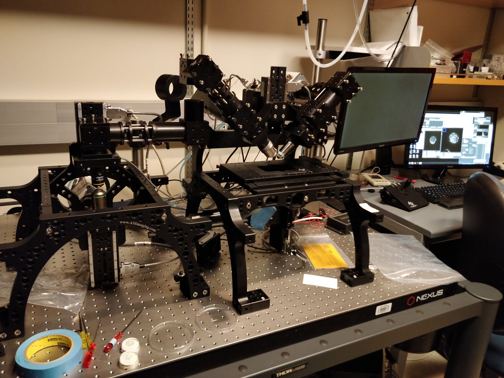
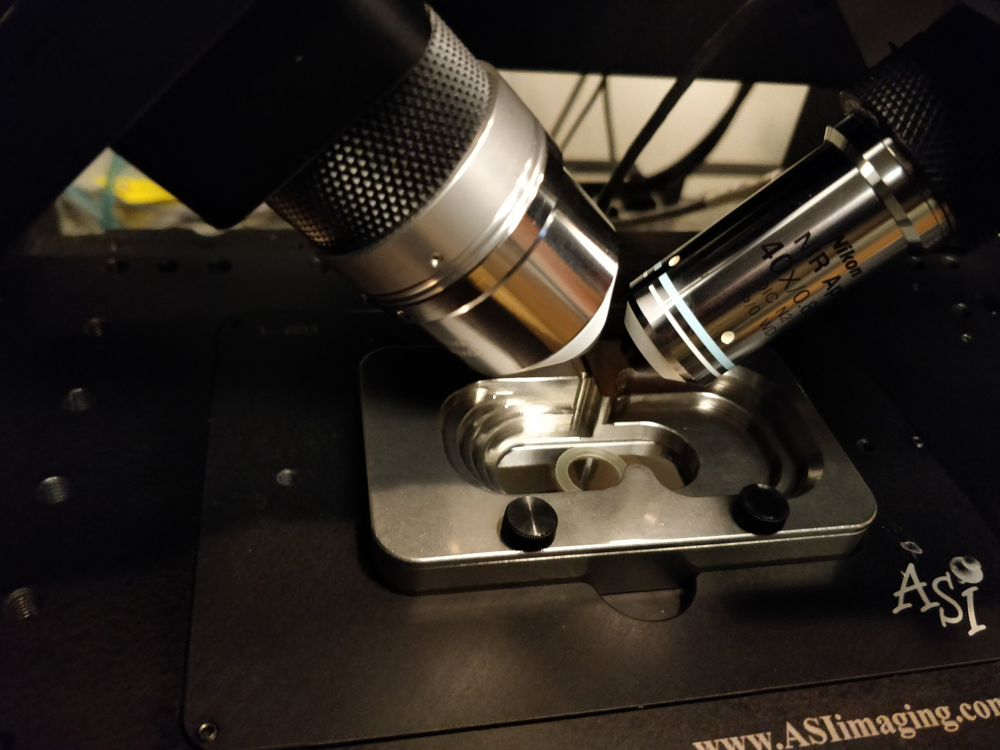
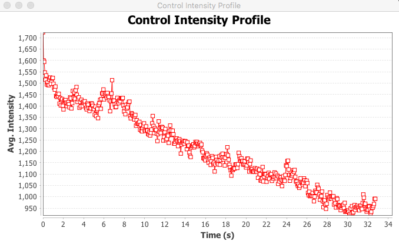
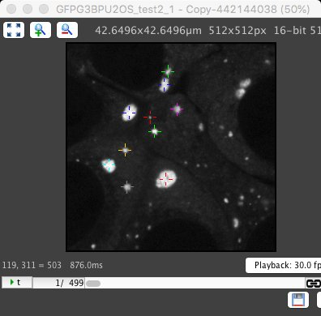
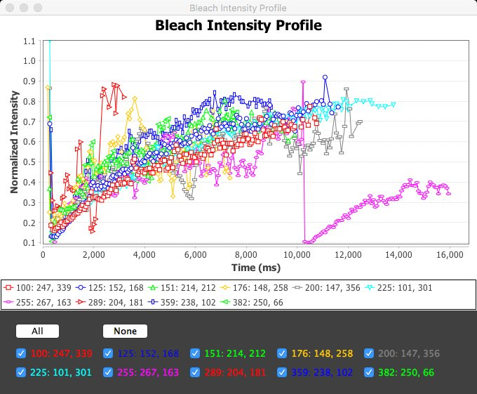
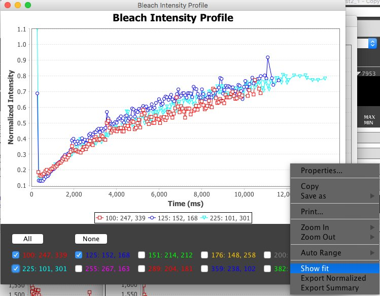
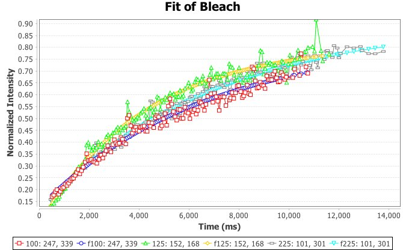
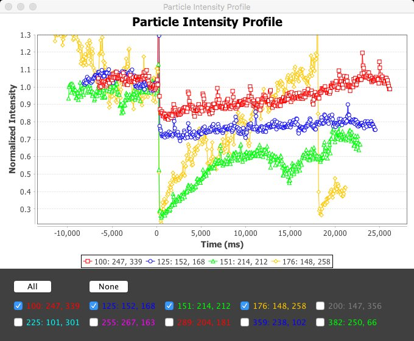
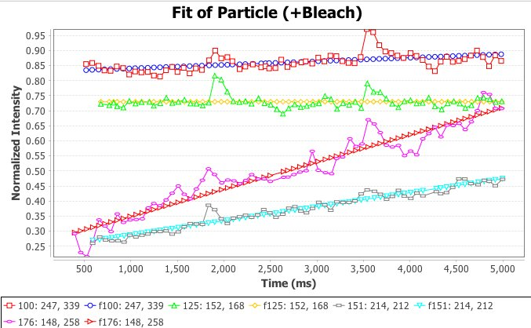

Groupmeeting ~72
- diSPIM: refractive index matching and remote focus
- Live photo-bleaching and analysis
Nico Stuurman, 2019-03-01
diSPIM: remote focus
Two goals:
- Use Special objective (na 0.4) to reduce spherical aberration
- Focus remotely to not disturb sample
diSPIM: design of remote focus

Botcherby et al., https://doi.org/10.1016/j.optcom.2007.10.007
- L2: Optimum mag: M(L1)/(n1/n2) ~ 16/1.33 = 12
- Design: L2=10xNA 0.4(Olympus), L3=20x0.75NA (Nikon)
- 4f design: Remove scanner. Reverting to current config will take ~ 1 hour
diSPIM remote focus

Jon Daniels (ASI)
diSPIM remote focus
diSPIM remote focus
diSPIM remote focus
Daniel Elnatan
diSPIM remote focus
diSPIM remote focus
diSPIM remote focus
diSPIM remote focus (Optiprep)
Live photo-bleaching and analysis

Jess Sheu-Gruttadauria
Plan:
- Bleach live, using point and shoot
- Automatically find bleach spot
- 1: Get intensity at bleach spot
- 2: Track particle, get intensity as function of time, for bleached area and particle
- Calculate exchange within particle and between particle and outside
Live photo-bleaching and analysis

- Find bleach location (t-project min and avg, min / avg, gauss filter, min value)
- Find particle where bleach happened, track through the time-lapse
- Track bleach spot in particle (divide with pre-bleach, find min value)
Live photo-bleaching and analysis
Sideline:
Java Image analysis "libraries":
- ImageJ(1) - disorganized, chaotic, hard to maintain
- Imglib2 - poorly documented, slow, capable
- BoofCV - well organized, fast, extendable
Live photo-bleaching and analysis
Live photo-bleaching and analysis
Live photo-bleaching and analysis


Live photo-bleaching and analysis
Live photo-bleaching and analysis
$$y = a (1 - e^{(-kx + b)})$$
immobile fraction: 1 - a
Live photo-bleaching and analysis
Live photo-bleaching and analysis
$$y = c + kx$$
Live photo-bleaching and analysis
n=20
Bleach mobile fraction: 0.83 ± 0.16
Bleach Spot t1/2: 2.9 ± 1.3 s
Bleach Spot k: 0.30 ± 0.02 s-1
Particle k: 0.009 ± 0.012 s-1
Bleach mobile fraction: 0.83 ± 0.16
Bleach Spot t1/2: 2.9 ± 1.3 s
Bleach Spot k: 0.30 ± 0.02 s-1
Particle k: 0.009 ± 0.012 s-1
Live photo-bleaching and analysis
However,